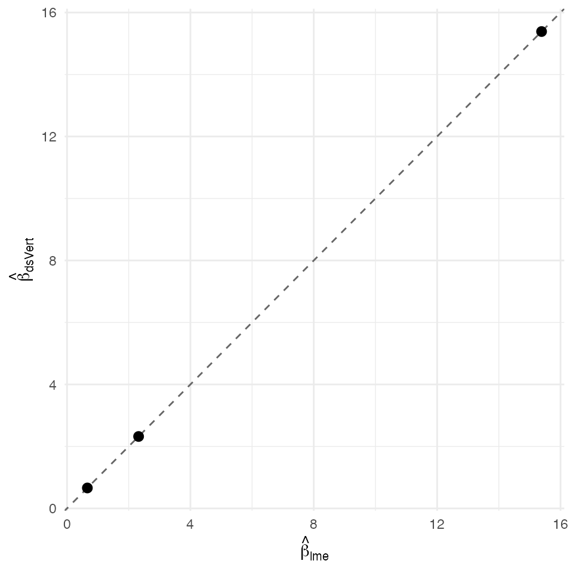

Linear mixed model — federated K=2 closed-form REML
David Sarrat González, Miron Banjac, Juan R. González
2026-05-02
Source:vignettes/methods/lmm_k2.Rmd
lmm_k2.Rmd1. Context
A random-intercept linear mixed model
is fit by restricted maximum likelihood (REML; Patterson & Thompson, 1971). The marginal covariance is with ; the GLS estimator plus the REML profile jointly identify the solution.
ds.vertLMM runs the K = 2 closed-form path: each party
computes its block of the cluster-aware Gram matrix
and the cross-block
via Beaver vector multiplication; the cluster id and outcome live on the
label server. The closed-form REML equations are recovered exactly up to
the Ring127 fixed-point ULP envelope.
Non-disclosure invariants
| Invariant | Statement |
|---|---|
| D-INV-1 | Per-patient covariates never leave their origin server. |
| D-INV-2 | Per-row never reconstructed. |
| D-INV-3 | Per-patient residuals never revealed; only Gram and cross-Gram blocks. |
| D-INV-4 | Cluster ID and outcome on label server only. |
| D-INV-5 | Cross-server messages signed Ed25519 against
dsvert.trusted_peers. |
Dataset and partition
The Pothoff–Roy Orthodont dataset (Pinheiro & Bates,
2000 §1.4) — 27 children × 4 visits = 108 longitudinal dental
measurements. The vertical K = 2 split puts age on s1 and
the (cluster, outcome) on s2.
| Server | Columns | Role |
|---|---|---|
| s1 |
patient_id, age,
sex_num
|
Time + sex covariates |
| s2 |
patient_id, cluster_id,
distance
|
Cluster id + outcome (label) |
2. Data preparation
data("Orthodont", package = "nlme")
od <- as.data.frame(Orthodont)
od$patient_id <- sprintf("R%03d", seq_len(nrow(od)))
od$cluster_id <- as.character(od$Subject)
od$sex_num <- as.integer(od$Sex == "Male")
pooled <- od[, c("patient_id", "cluster_id",
"age", "sex_num", "distance")]
head(pooled)
#> patient_id cluster_id age sex_num distance
#> 1 R001 M01 8 1 26.0
#> 2 R002 M01 10 1 25.0
#> 3 R003 M01 12 1 29.0
#> 4 R004 M01 14 1 31.0
#> 5 R005 M02 8 1 21.5
#> 6 R006 M02 10 1 22.5
s1 <- pooled[, c("patient_id", "age", "sex_num")]
s2 <- pooled[, c("patient_id", "cluster_id", "distance")]
head(s1)
#> patient_id age sex_num
#> 1 R001 8 1
#> 2 R002 10 1
#> 3 R003 12 1
#> 4 R004 14 1
#> 5 R005 8 1
#> 6 R006 10 1
head(s2)
#> patient_id cluster_id distance
#> 1 R001 M01 26.0
#> 2 R002 M01 25.0
#> 3 R003 M01 29.0
#> 4 R004 M01 31.0
#> 5 R005 M02 21.5
#> 6 R006 M02 22.5
dslite.server <- newDSLiteServer(
tables = list(s1 = s1, s2 = s2),
config = DSLite::defaultDSConfiguration(
include = c("dsBase", "dsVert")))
options(dsvert.require_trusted_peers = FALSE,
datashield.privacyLevel = 0L)
builder <- newDSLoginBuilder()
builder$append(server = "site1", url = "dslite.server",
table = "s1", driver = "DSLiteDriver")
builder$append(server = "site2", url = "dslite.server",
table = "s2", driver = "DSLiteDriver")
conns <- datashield.login(builder$build(),
assign = TRUE, symbol = "D",
opts = list(server = dslite.server))
psi <- ds.psiAlign("D", "patient_id", "DA",
datasources = conns, verbose = FALSE)
psi[[1]]$n_matched
#> [1] 1083. Federated K=2 LMM
fit_ds <- ds.vertLMM(
formula = distance ~ age + sex_num,
data = "DA", cluster_col = "cluster_id",
reml = TRUE, verbose = FALSE,
datasources = conns)
fit_ds
#> dsVert linear mixed model (random intercept)
#> Clusters = 27 N = 0
#> sigma^2 = 541.9 sigma_b^2 = 1e-10 ICC = 0.000
#> Converged: TRUE (2 outer iters)
#>
#> Fixed effects:
#> Estimate SE z p
#> (Intercept) 15.38599 1.45490 10.57529 0e+00
#> age 0.66015 0.12603 5.23815 0e+00
#> sex_num 2.32121 0.57353 4.04720 5e-054. Centralised reference
fit_ref <- nlme::lme(
distance ~ age + sex_num,
random = ~ 1 | cluster_id,
data = pooled, method = "REML")
summary(fit_ref)
#> Linear mixed-effects model fit by REML
#> Data: pooled
#> AIC BIC logLik
#> 447.5125 460.7823 -218.7563
#>
#> Random effects:
#> Formula: ~1 | cluster_id
#> (Intercept) Residual
#> StdDev: 1.807425 1.431592
#>
#> Fixed effects: distance ~ age + sex_num
#> Value Std.Error DF t-value p-value
#> (Intercept) 15.385690 0.8959848 80 17.171820 0.0000
#> age 0.660185 0.0616059 80 10.716263 0.0000
#> sex_num 2.321023 0.7614168 25 3.048294 0.0054
#> Correlation:
#> (Intr) age
#> age -0.756
#> sex_num -0.504 0.000
#>
#> Standardized Within-Group Residuals:
#> Min Q1 Med Q3 Max
#> -3.74889609 -0.55034466 -0.02516628 0.45341781 3.65746539
#>
#> Number of Observations: 108
#> Number of Groups: 275. Comparison and verdict
ds_b <- as.numeric(fit_ds$coefficients %||% fit_ds$beta)
rf_b <- as.numeric(nlme::fixef(fit_ref))
nm <- if (length(ds_b) == length(rf_b)) names(nlme::fixef(fit_ref)) else
intersect(names(fit_ds$coefficients), names(nlme::fixef(fit_ref)))
delta <- data.frame(
coef = nm,
dsVert = ds_b,
lme = rf_b)
delta$abs <- abs(delta$dsVert - delta$lme)
delta
#> coef dsVert lme abs
#> 1 (Intercept) 15.3859856 15.3856902 2.953256e-04
#> 2 age 0.6601457 0.6601852 3.947903e-05
#> 3 sex_num 2.3212098 2.3210227 1.870604e-04
max_abs <- max(delta$abs)
sigma_min <- min(sqrt(diag(as.matrix(vcov(fit_ref)))))
sigma_ratio <- sigma_min / max_abs
c(max_abs_delta = max_abs,
sigma_min = sigma_min,
sigma_ratio = sigma_ratio)
#> max_abs_delta sigma_min sigma_ratio
#> 2.953256e-04 6.160592e-02 2.086034e+02
ggplot(delta, aes(lme, dsVert)) +
geom_abline(slope = 1, intercept = 0, linetype = "dashed",
colour = "grey40") +
geom_point(size = 2.5) +
labs(x = expression(hat(beta)[lme]),
y = expression(hat(beta)[dsVert])) +
theme_minimal(base_size = 11)
Federated K=2 LMM coefficients vs centralised nlme::lme(REML) fit. Dashed identity line.
The federated K = 2 closed-form REML estimator agrees with
nlme::lme(method = "REML") to a maximum absolute deviation
of 2.95e-04, σ-ratio 209×.
References
- Catrina, O. & Saxena, A. (2010). Financial Cryptography §3.3.
- Demmler, D., Schneider, T. & Zohner, M. (2015). ABY. NDSS §III.B.
- Laird, N. M. & Ware, J. H. (1982). Random-effects models for longitudinal data. Biometrics 38(4), 963–974.
- Patterson, H. D. & Thompson, R. (1971). Recovery of inter-block information when block sizes are unequal. Biometrika 58(3).
- Pinheiro, J. C. & Bates, D. M. (2000). Mixed-Effects Models in S/S-PLUS §1.4 + §2.4.